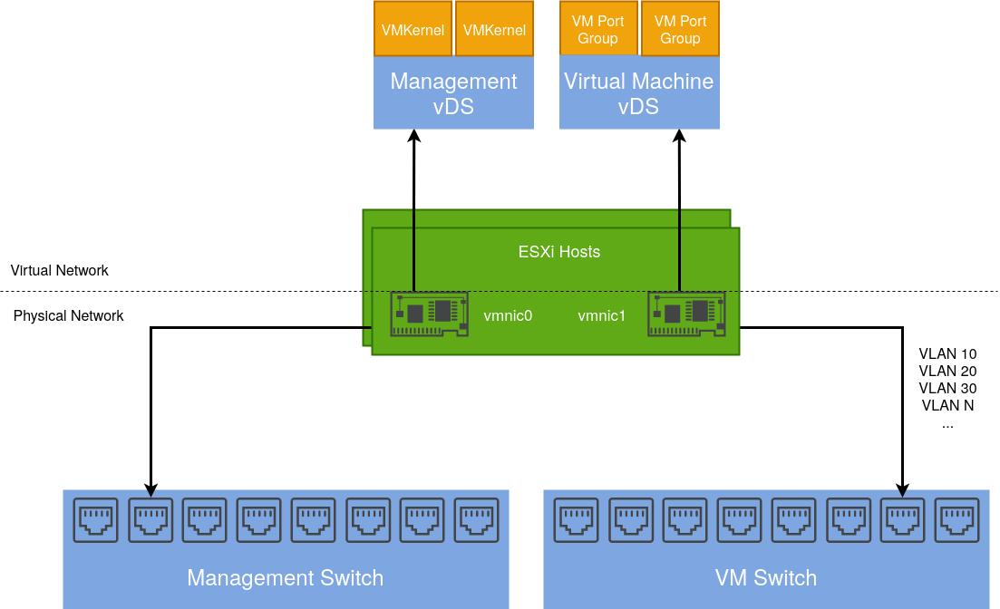
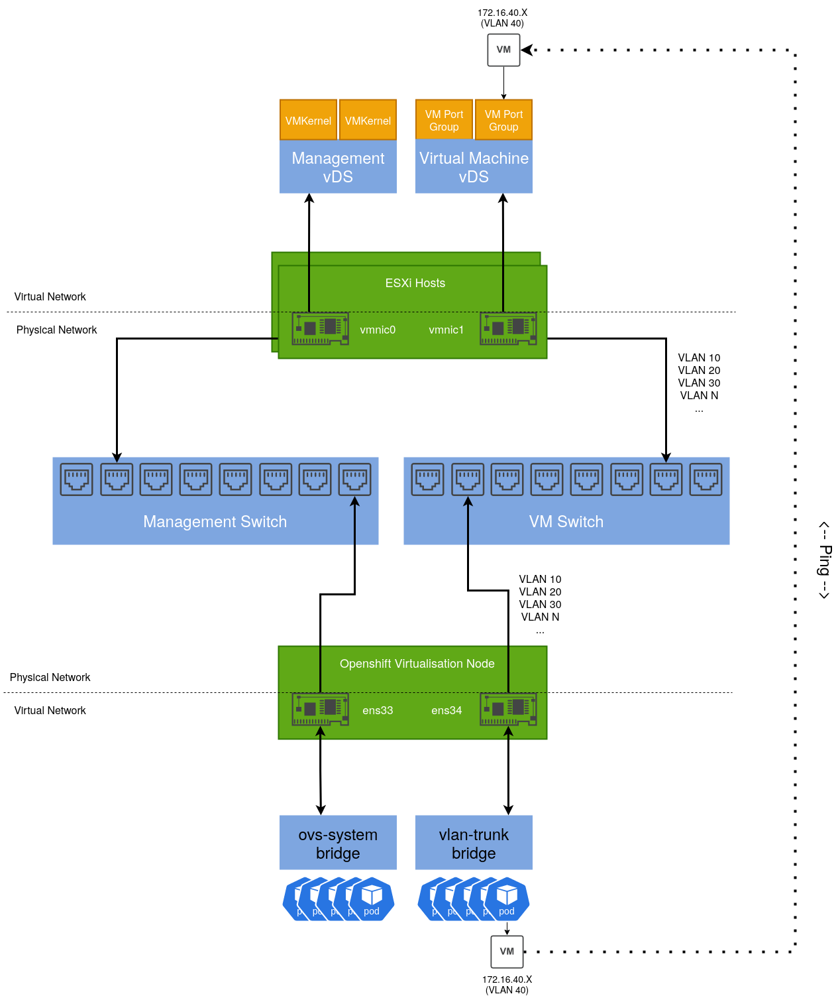
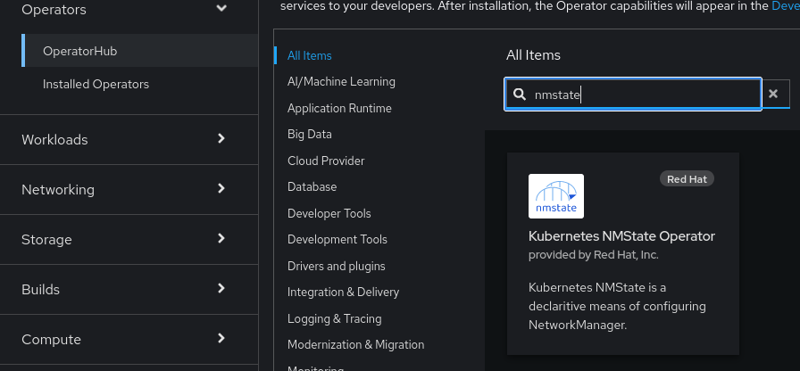
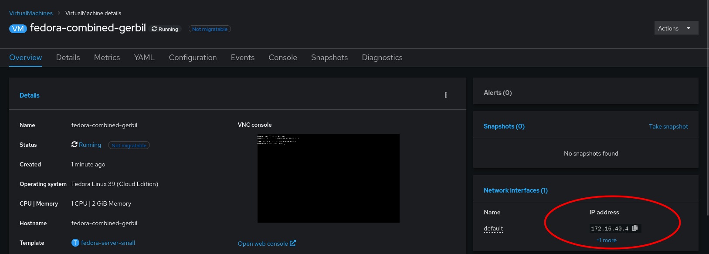

Replicating my vSphere network configuration in Openshift Virtualisation
Red Hat Openshift Virtualisation provides a platform for running and managing Virtual Machines alongside Containers using a consistent API. It also provides a mechanism for migrating VMs from platforms such as vSphere.
As I have both environments, I wanted to deploy an Openshift Virtualisation setup that mimics my current vSphere setup so I could migrate Virtual Machines to it.
Existing vSphere Design
Below is a diagram depicting my current vSphere setup. My ESXi hosts are dual-homed with a separation of management (vmkernel) and virtual machine traffic.
vmnic1 is connected to a trunk port accommodating several different VLANs. These are configured as corresponding port groups in the Distributed Switch.

Integrating an Openshift Virtualisation host
Given an Openshift host with the same number of NICs, we can design a similar solution including a test use case:

By default, an existing bridge (ovs-system) is created by Openshift to facilitate cluster networking. To achieve the same level of isolation configured in the vSphere environment, an additional bridge is required. This will be called vlan-trunk and as the name implies, it will act as a trunk interface for a range of VLAN networks.
Once configured, a Virtual Machine Instance can be created, connected to one of these VLAN networks and reside on the same L2 network as their vSphere-managed VM counterparts.
Configuring the Openshift Node
There are several ways to accomplish this, however for ease, the NMState Operator can be used to configure host networking in a declarative way:

Once installed, a default NMState object needs to be created:
apiVersion: nmstate.io/v1
kind: NMState
metadata:
name: nmstate
spec: {}
After which we can define an instance of the NodeNetworkConfigurationPolicy object that creates our additional bridge interface and includes a specific NIC.
apiVersion: nmstate.io/v1
kind: NodeNetworkConfigurationPolicy
metadata:
name: vlan-trunk-ens34-policy
spec:
desiredState:
interfaces:
- name: vlan-trunk
description: Linux bridge with ens34 as a port
type: linux-bridge
state: up
ipv4:
enabled: false
bridge:
options:
stp:
enabled: false
port:
- name: ens34
To validate, run ip addr show on the host:
2: ens33: <BROADCAST,MULTICAST,ALLMULTI,UP,LOWER_UP> mtu 1500 qdisc mq master ovs-system state UP group default qlen 1000
link/ether 00:50:56:bb:e3:c3 brd ff:ff:ff:ff:ff:ff
altname enp2s1
3: ens34: <BROADCAST,MULTICAST,UP,LOWER_UP> mtu 1500 qdisc mq master vlan-trunk state UP group default qlen 1000
link/ether 00:50:56:bb:97:0d brd ff:ff:ff:ff:ff:ff
altname enp2s2
...
653: vlan-trunk: <BROADCAST,MULTICAST,UP,LOWER_UP> mtu 1500 qdisc noqueue state UP group default qlen 1000
link/ether 00:50:56:bb:97:0d brd ff:ff:ff:ff:ff:ff
In a similar way that Distributed Port groups are created in vSphere, we can create NetworkAttachmentDefinition objects that represent our physical network(s) in software.
The example below is comparable to a Distributed Port Group in vSphere that’s configured to tag traffic with the VLAN ID of 40. If required, we could repeat this process for each VLAN/Distributed Port group so we have a 1:1 mapping between both the vSphere and Openshift Virtualisation environments.
apiVersion: k8s.cni.cncf.io/v1
kind: NetworkAttachmentDefinition
metadata:
annotations:
k8s.v1.cni.cncf.io/resourceName: bridge.network.kubevirt.io/vlan-trunk
name: vm-vlan-40
namespace: openshift-nmstate
spec:
config: '{"name":"vm-vlan-40","type":"cnv-bridge","cniVersion":"0.3.1","bridge":"vlan-trunk","vlan":40,"macspoofchk":true,"ipam":{},"preserveDefaultVlan":false}'
Which can be referenced when creating a VM:
After a short period, the VM’s IP address will be reported to the console. In my example, I have a DHCP server running on that VLAN, which is how this VM acquired its IP address:

Which we can test connectivity from another machine with ping. such as a VM running on an ESXi Host:
sh-5.1# ping 172.16.40.4
PING 172.16.40.4 (172.16.40.4) 56(84) bytes of data.
64 bytes from 172.16.40.4: icmp_seq=1 ttl=63 time=1.42 ms
64 bytes from 172.16.40.4: icmp_seq=2 ttl=63 time=0.960 ms
64 bytes from 172.16.40.4: icmp_seq=3 ttl=63 time=0.842 ms
64 bytes from 172.16.40.4: icmp_seq=4 ttl=63 time=0.967 ms
64 bytes from 172.16.40.4: icmp_seq=5 ttl=63 time=0.977 ms
By taking this approach, we can gradually start migrating VM’s from vSphere to Openshift Virtualisation with minimal disruption, which I will cover in a subsequent post.